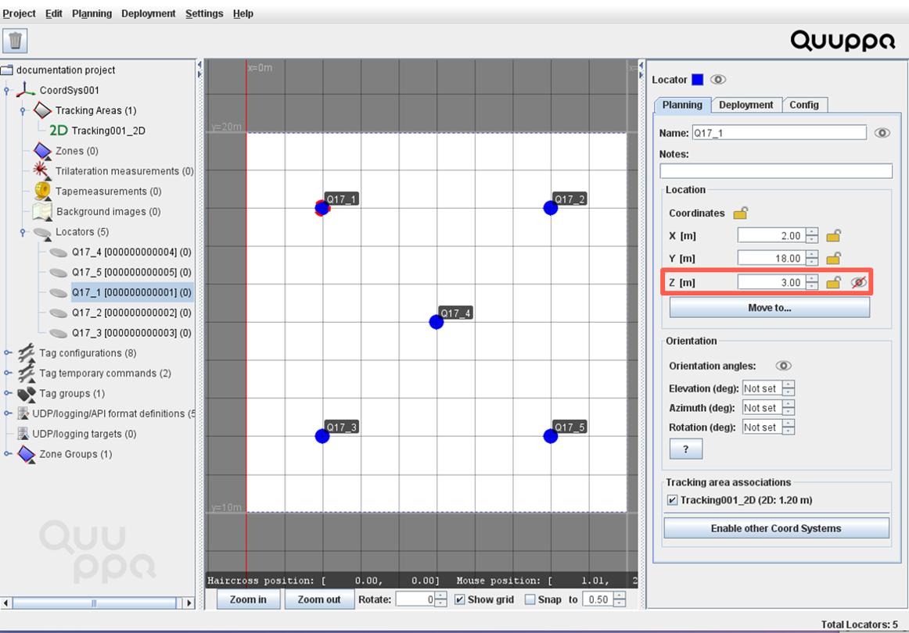
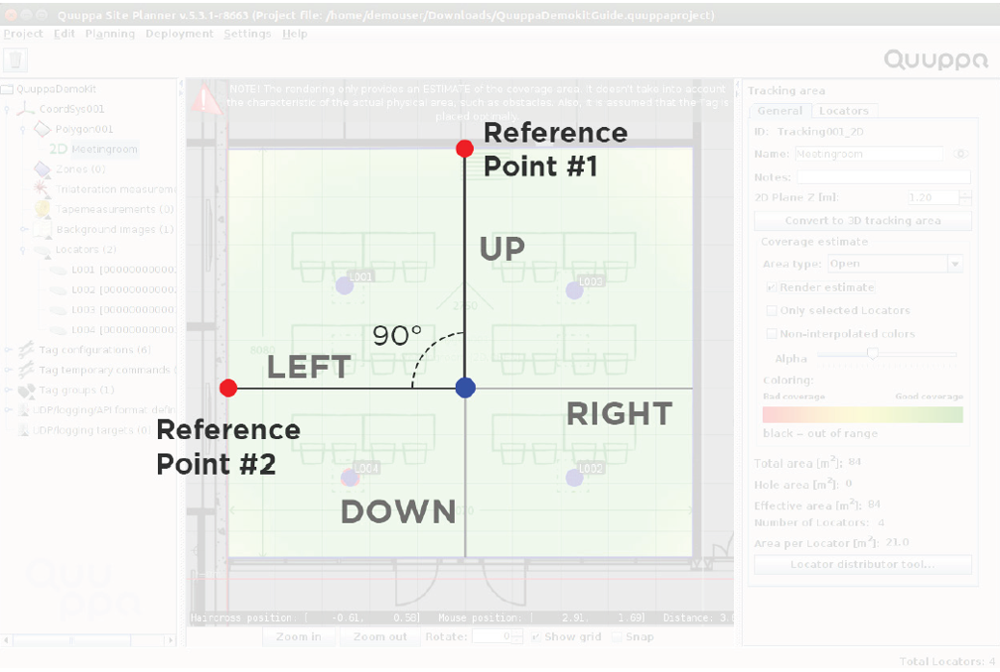

プロジェクトの展開
システムのハードウェア設置が完了したので、QSP を使ってプロジェクトを展開することができます。このステップでは、ロケーターの位置と向きを測定して、システムが、設置されたロケーターに対する追跡対象アイテムの位置データを計算できるようにします。この段階で、しっかりとロケーターを配置、特定し、照準を合わせることにより、その後の追跡結果の精度が向上します。また、タグを構成して、追跡を可能にします。
-
QSP でロケーターを配置します。
- ロケーターをクリックして選択します。
- 床からロケーターの中心までの高さを測定し、その値を Z
座標として右側のパネルに入力します。Note: 測定にはレーザー距離計の使用をお勧めします。これにより、精度の高い結果を簡単に得ることができます。

- 参照ポイントを 2
つ選択します。これらのポイントは、ロケーターに対し、正確に左、右、上、または下でなければなりません
(この 2 つのポイントが作る角度は 90 度でなければなりません)。
たとえば、下の図では、参照ポイント 1 は上、2 は左を向いています。

- ロケーターの真下から 1 つめの参照ポイントまでの距離を測定します。次に、Planning >
Add Guideline を選択し、この測定値を使用して、1
つ目のガイドラインを、上部のメニューバーを使用して、参照ポイントの方向を追加します。ウィンドウが表示されたら、測定値を入力します。マップビューに、追加されたガイドラインを表す赤色の点線が表示されます。

- 2 つ目の参照ポイントについて、ステップ d を繰り返します。
- マウスを使ってロケーターをドラッグすることで、ロケーターをガイドラインを目安とした正しい位置に移動します。参照ポイントの両端は、背景イメージで選択した参照ポイントと一致する必要があります。

- ロケーターの正確な位置が分かったら、右側のオブジェクト情報パネルにある Planning タブの
Coordinates
ヘッダーの隣にあるロックアイコンをクリックして、位置を固定します。

- すべてのロケーターについて、ステップ a ～ g を繰り返します。
-
ロケーターを特定します。
- エリア内を移動するのに十分な長さのイーサネットケーブルを使って Focusing Locator が PoE スイッチに接続されていることを確認します。PoE スイッチに接続すると、インジケータランプが緑色に点滅します。
- QSP で、ロケーターをクリックして選択します。
- 右側のパネルで、Deployment タブを開き、Start Identification Wizard ボタンをクリックします。 Identification Wizard ウィンドウが開きます。
- Q17 Focusing Locator に有効なライセンスをまだ取得していない場合には、 Quuppa Customer Portal のユーザー名とパスワード (設定されている場合は二要素認証) の入力を求められます。
- ロケーターのインジケーターランプが青色で点滅し、 Focusing Locator
のインジケーターランプが緑色で点灯していることを確認します。それ以外の場合には、接続をチェックし、QPE が展開モードであることを確認してからウィザードを再起動します。Note: QPE のモードをチェックするには、 Quuppa Controller のデスクトップにある QPE Web Console アイコンをクリックします。
- 選択したロケーターに、 Focusing Locator の照準を合わせます。選択したロケーターを表すドット (点)
がダイアグラムの中心に来るように近づけます
(ドットの色が緑色に変わります)。信号の品質が向上し、ウィザードがロケーターを特定できるようになるまで照準をそのまま維持します。Note: 高品質の信号を得るには、十分に近づく必要があります。

- すべてのロケーターについて、ステップ b ～ f を繰り返します。
-
ロケーターの照準を合わせます。
- QSP で、ロケーターをクリックして選択します。
- 右側のパネルで Deployment タブを開き、Start Focusing Wizard ボタンをクリックします。 Focusing Wizard ウィンドウが開きます。
- ロケーターのインジケーターランプが青色で点滅し、 Focusing Locator
のインジケーターランプが緑色で点灯していることを確認します。それ以外の場合には、接続をチェックし、QPE が展開モードであることを確認してからウィザードを再起動します。Note: QPE のモードをチェックするには、 Quuppa Controller のデスクトップにある QPE Web Console アイコンをクリックします。
- 照準測定は 2 回行います。まず、1 回目の照準測定を行います。
- Focusing Locator を、選択したロケーターの (プロジェクトの背景イメージに対して) まっすぐ左、右、上、または下に移動します。
- 照準を当てているロケーターに Focusing Locator を向けて、 Focusing Wizard
の指示に従って操作します。Note: 高品質の信号を得るには、十分に近づく必要があります。測定データの量を表すアプリケーションの緑色のバーがいっぱいになるまで、 Focusing Locator をロケーターに向け続けます。測定の精度をさらに上げるには、その位置にしばらくいてから、Continue ボタンをクリックします。

- Main directions
ボックスの矢印を使用して、どの方向からロケーターに照準を当てていたかを示します。指定した方向は、マップ上に赤の実線で表示されます。方向を正確に指定できたら、Continue
をクリックします。

- Focusing Locator をいろいろな場所に移動して、方向が正しいことを確認します。地図上の黒い実線が、
Focusing Locator の方向を指していなければなりません。
- 方向が正しい場合は、Accept results and measure this Locator again at different position をクリックします。
- 方向が正しくない場合は、Ignore this measurement and keep old data をクリックします。
- 同じロケーターで、2 回目の照準測定を行います。
- Focusing Locator を、選択したロケーターの 2 つ目の位置 (プロジェクトの背景イメージに対してまっすぐ左、右、上、または下にある) に移動します。
- Focusing Locator を前と同じロケーターに向けて、新たな位置から照準合わせの手順を繰り返します。 Attention: ウィザードにより、2 回の測定の誤差が計算されます。誤差のレベルが 4.0 未満になるようにしてください。誤差のレベルが 4.0 を超える場合には、次のステップに従って、照準測定をやり直します。Accept results and exit をクリックし、次にオブジェクト情報パネルの Deployment タブを選択し、Clear measurement data ボタンをクリックします。これで、ロケーターに再び照準を合わせられるようになります。
- 2 つの異なる方向からロケーターの照準合わせが完了し、満足できる結果を得られたら、Accept results and exit をクリックします。
- ロケーターそれぞれについて、照準合わせのプロセスを繰り返します。 Note: 位置追跡が機能するかどうかを確認するには、メニューバーから Deployment > Show Focusing Locator を選択します。追跡エリア内で Focusing Locator をあちこち移動させ、 QSP で Focusing Locator の位置を監視します。監視を停止するには、Deployment > Hide Focusing Locator を選択します。
-
タグを構成します。
- PoE スイッチに接続したまま Focusing Locator を上向きにして、テーブルに乗せます。
- QSP メニューバーで、Deployment > Tag configurator tool を選択します。新しいウィンドウが開きます。
- Autoconfigure Tags ボタンをクリックします。さらに新しいウィンドウが開きます。
- Configure チェックボックスをオンにして、構成が
ID_BADGE に設定されていること、 Tag target channel が
Proprietary に設定されていることを確認します。

- Start をクリックします。
- タグのボタンを押して、スリープ状態を解除し、 Focusing Locator の上に置きます。これらのタグが Tag
configurator tool
ウィンドウに表示されます。Note: どのタグがどれであるかを確認したい場合は、タグの背面にある ID 番号をチェックしてください。
- 個々のタグの構成ステータスが Done になったら、Stop
をクリックします。

- Tag configurator tool ウィンドウを閉じます。
- プロジェクトを保存します。